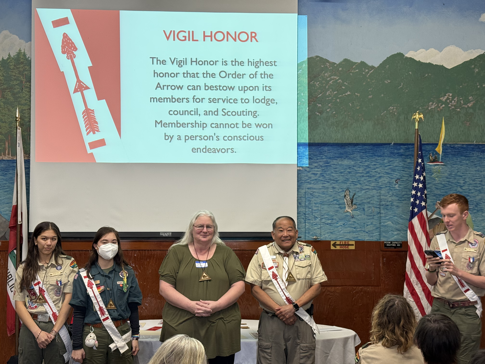
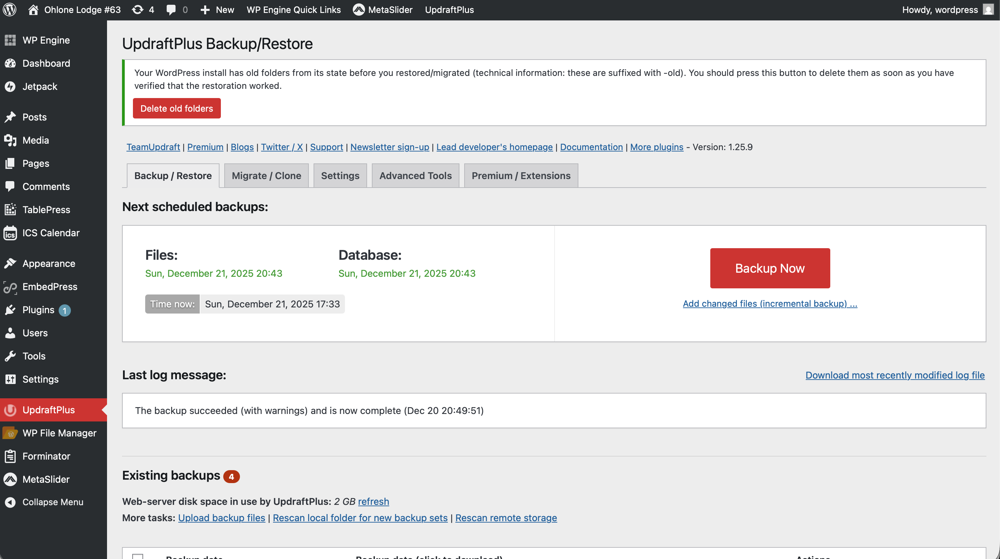

Leadership, engineering, and problem solving at scale.

Leading a 50 person recognition event
Leader
I lead people and operations to success. As an Eagle Scout and Order of the Arrow leader, I’ve directed
multi-unit organizations, rebuilt communications systems, and coordinated large, complex events. I combine
hands-on execution with strategic planning — whether that’s redesigning a lodge website and social presence,
managing 150-person camping trips, or organizing regional conferences. I deliver reliable outcomes and keep
people safe and productive.
Events led: 4Max participants: 150Volunteers: 20+
Simultaneously served as Senior Patrol Leader and Lodge Chief; expanded lodge membership and led
four multi-unit camping trips (50–150 participants) ensuring logistics, safety, and program quality.
Volunteers: 30+AppMachine
Coordinated a multi-lodge conference with over 250 participants. Delegated tasks and oversaw
committee members during planning and execution. Developed an event app using AppMachine.
Managed 20 Lifeguards2x Employee of the Month
Supervised and trained 20 lifeguards; enforced safety protocols and emergency response standards for a 300+ patron facility. Led shift coordination, pool chemical operations, and daily stakeholder communication.
70 participantsVolunteers: 30+
Led troop leadership and streamlined weekly operations; redesigned weekly meetings into a short,
high-impact follow-up session, improving volunteer efficiency and engagement. Recruited and mentored
patrol leaders; established consistent meeting leadership across the troop.
Managed 10 Direct Reports
Directed rank advancement program (2021) and managed 10 Troop Guides. Designed and produced
learning kits that improved retention and sped advancement.
Rebuilt lodge communications: redesigned social media and delivered a V1 website overhaul (ohlone63.org), improving clarity and member engagement.
Maintained regular member communications and documentation.
These experiences translate directly to IT and cybersecurity: event logistics mirror change management,
volunteer coordination reflects stakeholder communication, and safety protocols align with incident response
and compliance.
Engineer
I engineer reliable systems with a focus on security and maintainability. My experience spans IT
infrastructure, networking, web platforms, and software development — from deploying secure networks and
migrating production services to building software and hardware solutions that solve real problems.
Elastic SIEMAzure Data ExplorerWireshark
Conducted post-breach forensic analysis in a simulated SOC environment at Tracer FIRE (Sandia National Laboratories). Used Elastic SIEM for log correlation and Azure Data Explorer (ADX) for structured query-based investigation to identify indicators of compromise and trace attacker activity. Completed a CTF-style incident response exercise combining log analysis, anomaly detection, and structured incident documentation.
Google WorkspaceCloudflare50+ users
Designed and executed migrations of production email and web infrastructure, focusing on uptime,
cost reduction, and long-term maintainability. Implemented backup and CDN strategies to improve
resilience and performance.
UbiquitiVLANsNetwork Mapping
Designed and deployed a segmented network using VLANs and UniFi hardware to improve reliability
and security. Created network diagrams and documentation to support troubleshooting and future
expansion.
PythonTypeScriptGemini APIGitHub Copilot
Built a real-time computer vision–assisted safety device using Raspberry Pi, Python, and the Gemini API — achieving 25ms response time and 99% accuracy. Led a 3-day hackathon sprint building an AI essay feedback tool in TypeScript with a UI designed in Google Stitch, presented to a panel of evaluators. Leveraged AI-assisted development throughout to accelerate prototyping and maintain clean, readable code.
Raspberry PiRyzen 9800X3DRTX 4080 Super
Assembled a high-performance desktop (Ryzen 9800X3D, RTX 4080 Super, DDR5) and integrated a Raspberry Pi with camera, sensors, and audio output for an embedded vision device. Performed GPU thermal maintenance — diagnosed overheating via benchmarks, reapplied thermal interface materials, and validated performance recovery.
I approach engineering with a security-first, reliability-focused mindset, designing systems that are
maintainable, well-documented, and resilient under real-world conditions.
Hardware-assisted vision project

Recovering from a production WordPress failure using backups
Problem Solver
Clear communication and long-term thinking guide my approach to problem solving. I focus on building solutions
that are reliable, well-documented, and designed to prevent recurrence rather than temporary fixes.
Attempted performance optimization prior to a hosting migration by evaluating and testing
software-level optimizations to reduce unnecessary infrastructure changes.
Diagnosed system crashes by running benchmarks and monitoring thermal metrics, identifying GPU
overheating as the root cause.
Responded to a rapid pool temperature drop by isolating boiler error conditions and coordinating
with management to restore safe operation.
Implemented frequent backups during website redevelopment, creating recovery points after major
edits or plugin changes to minimize downtime and prevent catastrophic data loss.
Chose WordPress over a fully custom codebase to ensure long-term maintainability for future
leaders with varying technical experience.
Produced clear documentation for plugins and workflows and trained an adult leader to ensure
continuity, knowledge transfer, and consistent site management.
“Reliable systems are built by people who plan for failure.”
Forethought and clear communication drive how I approach every system I touch. The goal is never a quick fix — it's a lasting solution that the next person can understand, maintain, and build on.
My Projects
Selected real-world engineering projects demonstrating system design, problem solving, and hands-on
implementation. Each project includes technical details and, where applicable, source code.
Project Title: Tracer FIRE Cybersecurity Incident Response Training Sponsor: Sandia National Laboratories Problem: Simulated post-breach environment requiring forensic investigation of attacker activity across a compromised SOC network. Approach: Used Elastic SIEM for log correlation and Azure Data Explorer (ADX) for structured KQL-based queries to identify indicators of compromise and trace lateral movement. Supplemented with Velociraptor for endpoint forensics and Malcom for network graph analysis. Outcome: Completed CTF-style incident response exercise with structured documentation of findings, attacker timelines, and control gap recommendations. View project →
Project Title: Remote PC Power Management using IoT Platform Problem: Needed a reliable way to remotely power-cycle a home PC from out of state without expensive KVM-over-IP hardware. Approach: Programmed an ESP32 microcontroller in C++ to trigger PC power and reset lines via relay, controlled through the Blynk IoT cloud dashboard. Layered Tailscale for secure remote network access and Parsec for low-latency remote desktop once the machine was online. Outcome: Full remote power management operational from the Bay Area while at school in Tempe — cold boots, hard resets, and graceful shutdowns all accessible via phone. View project →
Project Title: AI-Powered Vision Assistance Prototype Problem: Visually impaired users lack affordable, real-time assistive devices that can identify hazards and provide immediate audio feedback. Approach: Built a wearable prototype using Raspberry Pi with camera module, ultrasonic sensors, and a speaker. Integrated the Gemini API for vision inference and wrote processing logic in Python. Used GitHub Copilot throughout to maintain code quality during a tight academic sprint. Outcome: Functional prototype achieving 25ms response time and 99% accuracy in controlled testing. Presented to course evaluators as a complete hardware-software system. View project →
Project Title: GPU Thermal Optimization Problem: High-end GPU running at unsafe temperatures under load, causing thermal throttling and system instability. Approach: Ran stress benchmarks and monitored thermals to confirm GPU overheating as root cause. Disassembled the card, cleaned old thermal pads and paste, applied fresh Thermal Grizzly materials, and validated recovery with a repeat benchmark. Outcome: Temperatures reduced to safe operating range. System stable under sustained load with documented before/after thermal profiles. View project →
Project Title: Cloud Email and Workspace Migration Sponsor: Volunteer Project Problem: Scout organization running a legacy email platform that was unreliable, costly, and not manageable by non-technical volunteers. Approach: Planned and executed a staged migration to Google Workspace with zero downtime, including DNS cutover, mailbox migration, and youth protection compliance validation. Produced runbooks and trained an adult leader for ongoing administration. Outcome: 50+ users migrated successfully with no service interruption. Eliminated $200/year in fees and left the organization with a maintainable, documented system. View project →
Project Title: Home Network Infrastructure Upgrade Problem: Persistent wireless failures and an unsegmented flat network in a busy household with 60+ devices. Approach: Diagnosed root cause (ISP modem bridge mode misconfiguration + channel congestion), then deployed a Ubiquiti UniFi stack with proper VLAN segmentation separating IoT, guest, and internal traffic. Documented topology, access control lists, and configuration baselines. Outcome: Network outages reduced from ~50 per year to 1. Clean segmentation improved security posture and gave a documented baseline for future changes. View project →
Project Title: Personal Portfolio Website Problem: Needed a centralized, professional platform to document and present technical projects to recruiters and employers. Approach: Designed and built kevinmonsen.com from scratch — custom HTML/CSS/JS, teal accent design system, deployed through Cloudflare with CDN and DNS configuration. Iterated on layout, copy, and project pages based on career center feedback. Outcome: Live production site serving as the primary professional presence, linked across LinkedIn, resume, Handshake, and CareerLink. View project →
Project Title: Lodge WordPress Site (Production) Sponsor: Volunteer Project — OA Ohlone Lodge 63 Problem: Scout lodge needed a reliable, publicly accessible website manageable by volunteers with no web development background. Approach: Chose WordPress over a custom build deliberately — prioritizing long-term maintainability over technical elegance. Configured plugins, established a documentation standard, and trained a non-technical adult leader as primary maintainer. Outcome: Live site at ohlone63.org serving active lodge membership. Handed off with full documentation and a trained maintainer. View project →
Project Title: Scottsdale Technology Management Website Sponsor: Design Exercise Problem: Needed a design exercise to explore what a professional MSP firm's online presence should look like — usable, credible, and maintainable. Approach: Designed and built a full professional services site with service pages, about section, and contact flow. Focused on clarity and long-term maintainability over visual complexity. Outcome: Production-ready site deployed as a portfolio and design reference for future MSP work. View project →
Project Title: AI Essay Feedback Tool Sponsor: Hackathon Project Problem: Students lack access to immediate, structured feedback on essay quality between drafts. Approach: Led a 3-person team through a hackathon sprint. Designed the UI in Google Stitch, implemented structured rubric-based feedback logic in TypeScript using the Google AI Studio API, and used Kiro as the primary AI development tool throughout. Outcome: Working prototype delivered and presented to evaluators within the hackathon window. View project →
Project Title: Kiro Spark Hackathon — Chrome Extension Sponsor: Hackathon Project — Kiro Spark Challenge Problem: Employees feel lost once you finish onboarding them and have no idea who to contact if they need more support or who last worked on the project they were assigned to Approach: Built Afloat, an ever-boarding tool that lets employees ask questions, lets managers check in, and give easy access to the company wide knowlage base with natural language queries Outcome: Employees feel more supported and are less stuck as they adapt to company culture and knowlage. Managers get greater insights on how their new employees are feeling and can support them better View project →
Object-Oriented ProgrammingC / C++ ProgrammingDiscrete MathematicsDigital Logic & DesignComputer Systems Engineering (TA)Data Structures & AlgorithmsCalculus III
Honors & Recognition
Eagle ScoutOrder of the Arrow — Vigil HonorFounder's Award
Interested in working together?
I’m currently seeking IT or security-focused internship opportunities where I can contribute, learn, and take on
real responsibility. If my background aligns with your team, I’d welcome the opportunity to connect.